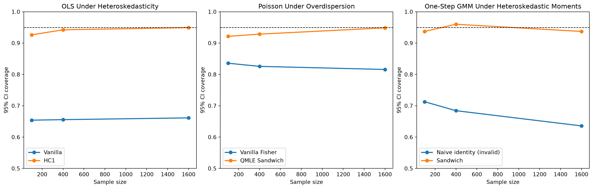

This page runs a cached Monte Carlo experiment on one narrow question: when the point estimator is held fixed, what happens if the variance estimator is wrong?
The three cases line up with the current library surface:
OLS: compare the homoskedastic textbook covariance to HC1 under heteroskedastic errors.
Poisson: compare the vanilla Fisher-information covariance to the QMLE sandwich under overdispersed counts with the mean still correctly specified.
GMM: compare the vanilla covariance to the sandwich covariance in one-step identity-weighted GMM under heteroskedastic moments.
The page uses Quarto execution caching and document freezing, so once the Monte Carlo cells have run, later site renders should reuse the saved outputs until this file changes.
1 Imports And Helpers
Show code
from html import escapeimport matplotlib.pyplot as pltimport numpy as npimport crabbymetrics as cmfrom IPython.display import HTML, displaynp.set_printoptions(precision=4, suppress=True)def html_table(headers, rows): parts = ["<table>","<thead>","<tr>",*[f"<th>{escape(str(header))}</th>"for header in headers],"</tr>","</thead>","<tbody>", ]for row in rows: parts.append("<tr>")for cell in row: parts.append(f"<td>{cell}</td>") parts.append("</tr>") parts.extend(["</tbody>", "</table>"])return"".join(parts)def summarize_method(estimates, ses, truth): estimates = np.asarray(estimates) ses = np.asarray(ses) covered = np.abs(estimates - truth) <=1.96* sesreturn {"mean_estimate": float(estimates.mean()),"bias": float(estimates.mean() - truth),"empirical_sd": float(estimates.std(ddof=1)),"mean_se": float(ses.mean()),"coverage": float(covered.mean()),"mean_ci_length": float((2.0*1.96* ses).mean()), }def build_result_rows(results, model_name): rows = []for entry in results: rows.append( [ model_name, entry["method"], entry["n"],f"{entry['mean_estimate']:.4f}",f"{entry['bias']:.4f}",f"{entry['empirical_sd']:.4f}",f"{entry['mean_se']:.4f}",f"{entry['coverage']:.3f}",f"{entry['mean_ci_length']:.4f}", ] )return rowsdef plot_coverages(ax, results, title): sample_sizes =sorted({entry["n"] for entry in results}) methods = []for entry in results:if entry["method"] notin methods: methods.append(entry["method"])for method in methods: coverage = [next(entry["coverage"] for entry in results if entry["n"] == n and entry["method"] == method)for n in sample_sizes ] ax.plot(sample_sizes, coverage, marker="o", linewidth=2.0, label=method) ax.axhline(0.95, color="black", linestyle="--", linewidth=1.0) ax.set_ylim(0.5, 1.0) ax.set_title(title) ax.set_xlabel("Sample size") ax.set_ylabel("95% CI coverage") ax.legend()
2 Monte Carlo Design
All three sections target the same style of diagnostic:
the empirical standard deviation of the point estimate across replications
the average reported standard error from each variance estimator
the 95% Wald confidence interval coverage for one target coefficient
The sample sizes are shared across sections, but the replication counts differ because OLS is a closed-form solve while Poisson and GMM are iterative:
Show code
sample_sizes = [100, 400, 1600]ols_reps =3000poisson_reps =700gmm_reps =700display( HTML( html_table( ["Experiment", "Replications Per n", "Target"], [ ["OLS", ols_reps, "Slope on the first regressor"], ["Poisson", poisson_reps, "Slope on the first regressor"], ["GMM", gmm_reps, "Coefficient on the endogenous regressor"], ], ) ))
Experiment
Replications Per n
Target
OLS
3000
Slope on the first regressor
Poisson
700
Slope on the first regressor
GMM
700
Coefficient on the endogenous regressor
3 Simulation Code
Show code
def simulate_ols(sample_sizes, reps, seed): rng = np.random.default_rng(seed) beta_true = np.array([0.5, 1.0, -0.6]) out = []for n in sample_sizes: slope_estimates = [] vanilla_ses = [] hc1_ses = []for _ inrange(reps): x = rng.normal(size=(n, 2)) sigma =0.4+0.9* x[:, 0] **2 y = beta_true[0] + x @ beta_true[1:] + sigma * rng.normal(size=n) model = cm.OLS() model.fit(x, y) vanilla = model.summary(vcov="vanilla") hc1 = model.summary(vcov="hc1") slope_estimates.append(float(vanilla["coef"][0])) vanilla_ses.append(float(vanilla["coef_se"][0])) hc1_ses.append(float(hc1["coef_se"][0])) out.append({"n": n, "method": "Vanilla", **summarize_method(slope_estimates, vanilla_ses, beta_true[1])}) out.append({"n": n, "method": "HC1", **summarize_method(slope_estimates, hc1_ses, beta_true[1])})return outdef simulate_poisson(sample_sizes, reps, seed): rng = np.random.default_rng(seed) beta_true = np.array([0.2, 0.4, -0.3]) out = []for n in sample_sizes: slope_estimates = [] vanilla_ses = [] qmle_ses = []for _ inrange(reps): x = rng.normal(size=(n, 2)) design = np.column_stack([np.ones(n), x]) mu = np.exp(design @ beta_true) mixing = rng.gamma(shape=2.0, scale=0.5, size=n) y = rng.poisson(mu * mixing).astype(float) model = cm.Poisson(alpha=0.0, max_iterations=200, tolerance=1e-8) model.fit(x, y) vanilla = model.summary(vcov="vanilla") qmle = model.summary(vcov="sandwich") slope_estimates.append(float(vanilla["coef"][0])) vanilla_ses.append(float(vanilla["coef_se"][0])) qmle_ses.append(float(qmle["coef_se"][0])) out.append( {"n": n, "method": "Vanilla Fisher", **summarize_method(slope_estimates, vanilla_ses, beta_true[1])} ) out.append( {"n": n, "method": "QMLE Sandwich", **summarize_method(slope_estimates, qmle_ses, beta_true[1])} )return outdef gmm_moments(theta, data): resid = data["y"] - data["x"] * theta[0]return data["z"] * resid[:, None]def gmm_jacobian(theta, data):del thetareturn-(data["z"].T @ data["x"][:, None]) / data["x"].shape[0]def simulate_gmm(sample_sizes, reps, seed): rng = np.random.default_rng(seed) beta_true =1.0 out = []for n in sample_sizes: slope_estimates = [] vanilla_ses = [] sandwich_ses = []for _ inrange(reps): z = rng.normal(size=(n, 3)) v = rng.normal(size=n) eps = rng.normal(size=n) x = z @ np.array([0.9, 0.45, -0.35]) + v u = (0.3+0.5* z[:, 0] **2) * eps +0.6* v y = beta_true * x + u zx = z.T @ x zy = z.T @ y theta0 = np.array([(zx @ zy) / (zx @ zx)]) model = cm.GMM(gmm_moments, jacobian_fn=gmm_jacobian, max_iterations=200, tolerance=1e-10) model.fit({"x": x, "y": y, "z": z}, theta0, weighting="identity") sandwich = model.summary(vcov="sandwich", omega="iid")# Deliberately invalid covariance, retained only as a negative control. jacobian = gmm_jacobian(sandwich["coef"], {"x": x, "z": z}) naive_variance =1.0/ (n *float((jacobian.T @ jacobian)[0, 0])) slope_estimates.append(float(sandwich["coef"][0])) vanilla_ses.append(float(np.sqrt(naive_variance))) sandwich_ses.append(float(sandwich["se"][0])) out.append({"n": n, "method": "Naive identity (invalid)", **summarize_method(slope_estimates, vanilla_ses, beta_true)}) out.append({"n": n, "method": "Sandwich", **summarize_method(slope_estimates, sandwich_ses, beta_true)})return out
fig, axes = plt.subplots(1, 3, figsize=(15.2, 4.8), constrained_layout=True)plot_coverages(axes[0], ols_results, "OLS Under Heteroskedasticity")plot_coverages(axes[1], poisson_results, "Poisson Under Overdispersion")plot_coverages(axes[2], gmm_results, "One-Step GMM Under Heteroskedastic Moments")plt.show()

6 OLS: Vanilla Versus HC1
The linear model uses heteroskedastic Gaussian errors with variance increasing in the first regressor. The point estimate is ordinary least squares in both columns of the table. Only the covariance formula changes:
The conditional mean is correctly specified as \(\mu_i = \exp(x_i^\top \beta)\), but the counts are generated from a Poisson-gamma mixture, so
\[
\mathbb{E}[Y_i \mid X_i] = \mu_i
\]
still holds while
\[
\mathrm{Var}(Y_i \mid X_i) > \mu_i.
\]
The Poisson point estimate remains a valid QMLE, but the Fisher-information covariance is no longer the right uncertainty measure. The sandwich estimator replaces the model-based variance with the outer product of score contributions. The ablation runs both columns through cm.Poisson.summary(vcov="vanilla") and cm.Poisson.summary(vcov="sandwich").
For GMM the difference only shows up if the weighting and covariance assumptions are not already aligned. This experiment therefore uses one-step identity-weighted GMM, not efficient two-step GMM. The moments are
\[
g_i(\beta) = z_i (y_i - x_i \beta),
\]
with heteroskedastic structural shocks. The deliberately invalid identity-weight shortcut uses
\[
\widehat{\mathrm{Var}}_{\text{vanilla}}(\hat\beta) = (G^\top W G)^{-1} / n,
\]
while the sandwich covariance uses
\[
\widehat{\mathrm{Var}}_{\text{sandwich}}(\hat\beta)
=
(G^\top W G)^{-1}
(G^\top W \hat\Omega W G)
(G^\top W G)^{-1} / n.
\]
The native estimator supplies the sandwich column. Version 0.9 rejects the vanilla shortcut for this identity-weighted fit unless the caller asserts optimal weighting, which is false here. The invalid column is therefore an explicit NumPy reference calculation, not a recommended API call. Its purpose is to show the coverage failure prevented by that new guard.
OLS under heteroskedasticity is the cleanest sanity check: the homoskedastic textbook covariance badly understates uncertainty, while HC1 tracks the empirical dispersion and restores coverage.
Poisson QMLE behaves the same way when the mean is right but the conditional variance is wrong: the point estimate is still fine, but inference needs the sandwich.
For GMM, the same lesson holds once the weighting matrix is not already the efficient one for the true moment covariance.
In practical terms, robust covariance estimators are not an embellishment here. They are the difference between a point estimator with usable intervals and one with systematically misleading uncertainty.